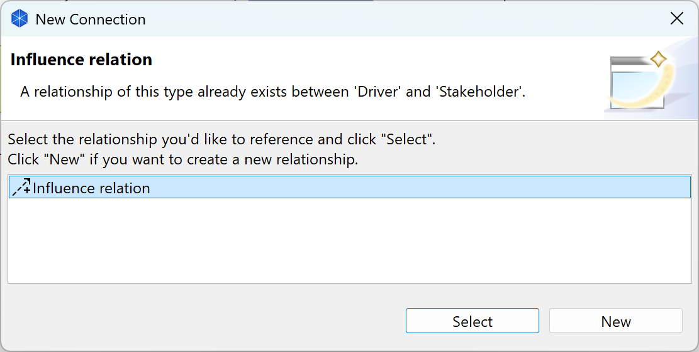
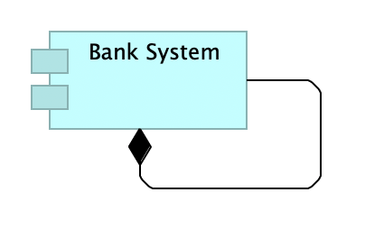

Adding New Elements to the View from the Palette
To create and add new elements to the View select the required element on the Palette and either click or drag the new figure onto the canvas area. Once the figure has been added to the canvas you can resize and re-position it by the usual drag actions.
Adding Elements to the View Automatically Adds them to the Model Tree
It is important to understand that adding elements (and relationships) to a View from the palette automatically adds those elements to the Model Tree as well. For example, dragging a "Business Actor" element onto the canvas creates both a figure on the View called "Business Actor" and also a node on the Model Tree with the same name.
Furthermore, if you delete an element in a View the corresponding element in the Model Tree is not deleted. This is because the element may be referenced in another View in the model. To delete the element completely you have to delete it in the Model Tree or choose the right-click menu item, "Delete from Model".
You can edit the element's name directly by clicking the text area on a figure. Double-clicking on the figure opens the Properties Window where you may edit the properties of the selected element.
Editing the View's Elements' Properties
The properties for a selected element in a View can be edited in the Properties Window. To open the Properties Window, either double-click the figure or select the figure and open the window from the toolbar or main menu. Each element in the View has different properties that can be set or viewed in the Properties Window. For more information see the section, The Properties Window.
Double-clicking an Element in a View opens the Properties Window, single-clicking on an already selected Element's text field allows you to directly edit the Element's text.
Adding New Relationships (Connections) to the View from the Palette
To add new relationships (connections) to the View select the required connection tool on the Palette and drag from one element on the View to another on the same View.
As with adding elements from the palette, adding a relationship to a View automatically adds it to the Model Tree as well, in the "Relations" folder.
When adding a new connection in a View, if the same type of model relationship already exists between the source and target elements, a dialog box will appear giving you the option to reference that model relationship from the connection, or create a new connection and model relationship:

A dialog providing the option of re-using a model relationship.
 Relationships, Rules and Regulations.
Relationships, Rules and Regulations.
ArchiMate elements can connect to other elements by a given set of relationships (connections). Some relationships are allowed, others are not. If a relationship is not allowed the cursor will show as a "Not Allowed" symbol, a circle with a diagonal line. If a relationship is allowed, it will show as a "plug" symbol.
Information about Connections
Once a relationship (connection) has been created between elements, some useful information can be revealed when the mouse cursor hovers over the connection to reveal a tooltip. The tooltip displays the relationship's name, its type, and some text that describes the nature of the relationship between the source and target elements.

A tooltip shows useful information when hovering over a connection
Adding Circular Relationships (Connections)
You may add a circular relationship (connection) if you wish. This is a relationship whose target and source element is the same. You can create a connection from an element to itself by selecting the required relationship from the Palette, clicking once on the element and then clicking again on the element:

A circular relationship